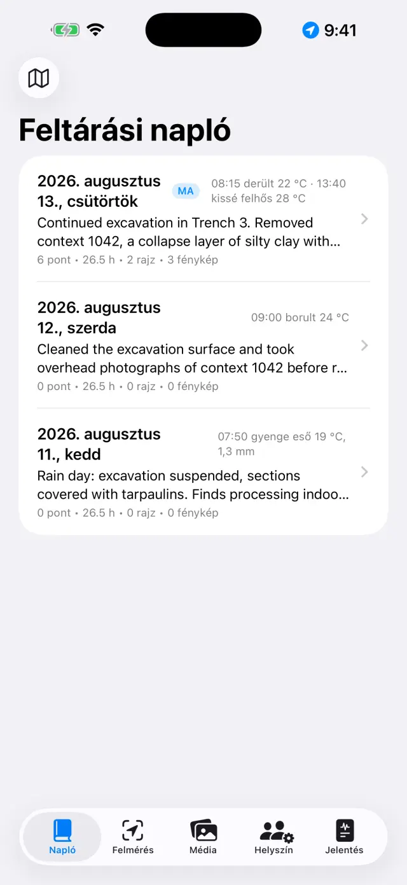
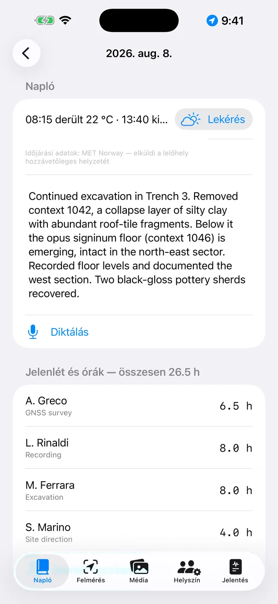
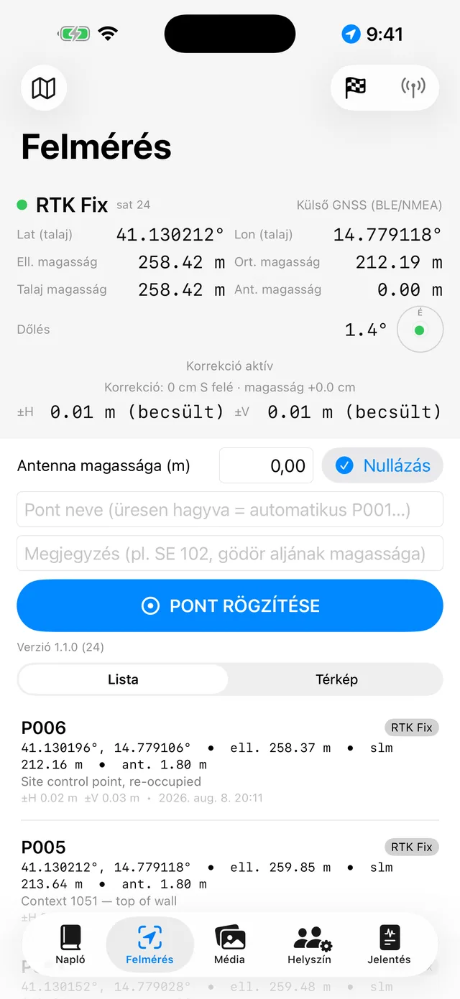
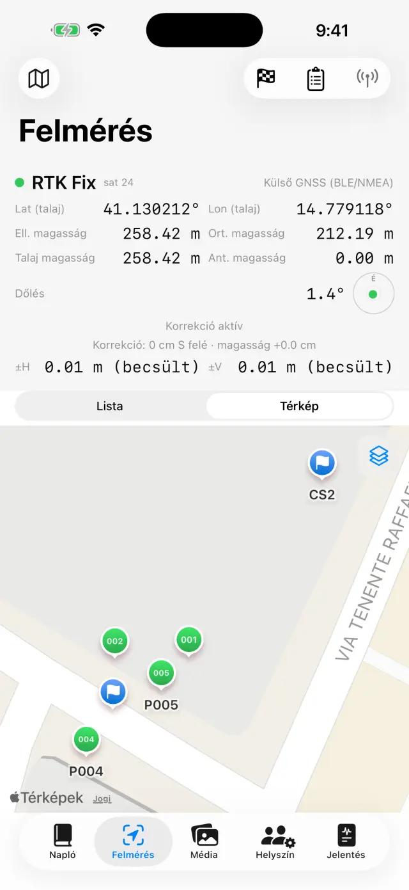
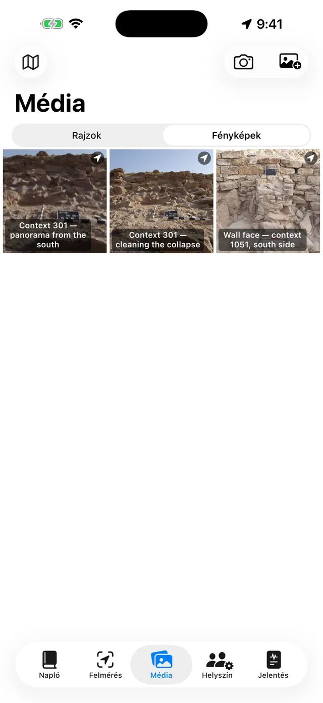
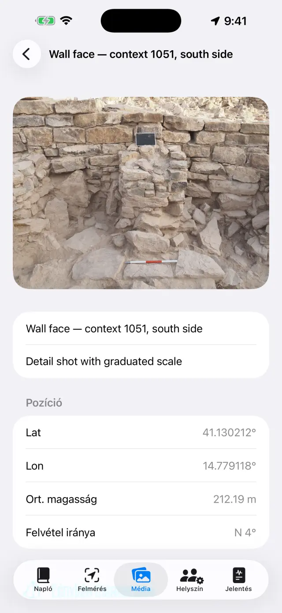
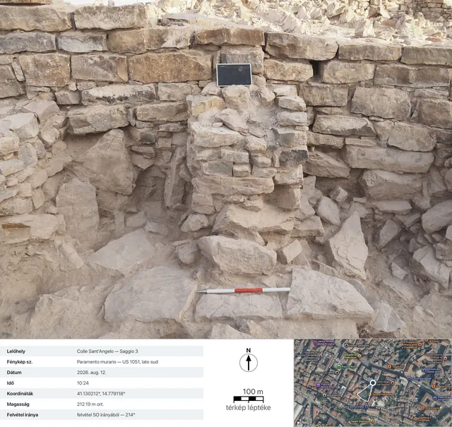
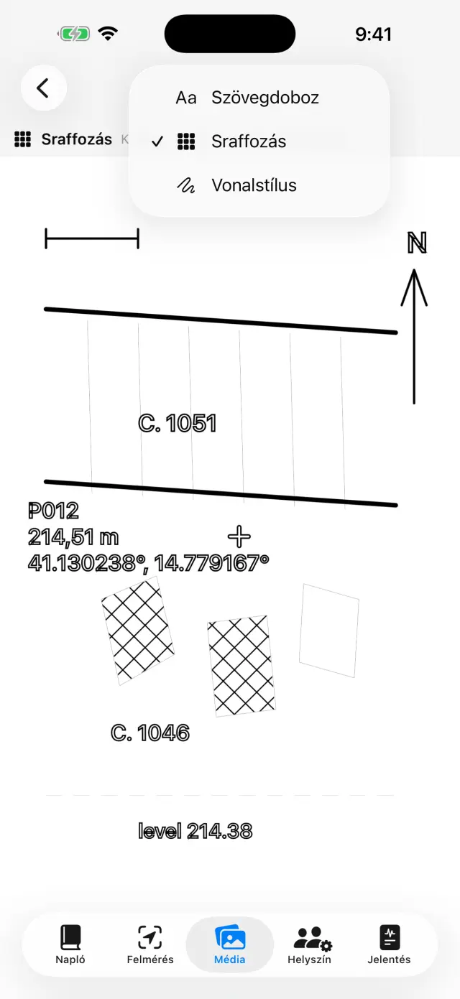
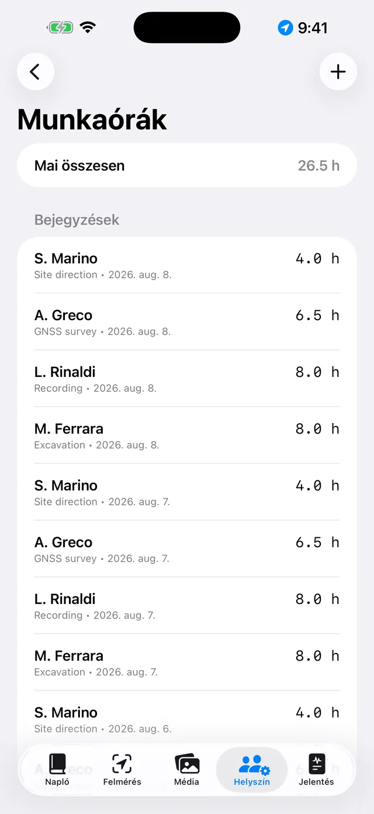
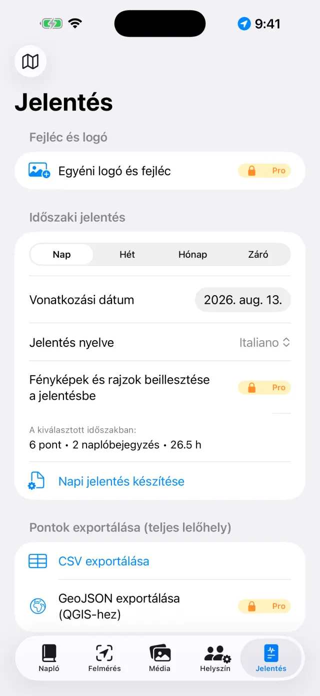

A digitális feltárási napló iPhone-ra és iPadre. 100%-ban offline: az adatok a készüléken maradnak.
📱 Android: az alkalmazás letöltése (APK, ingyenes). Első alkalommal az Android engedélyt kér a Chrome-ból vagy a Fájlokból történő telepítéshez; utána a frissítéseket az alkalmazás maga ajánlja fel.
Röviden
Egyetlen elven alapul minden: minden feltárási nap egy oldal,
amely magától kitöltődik. A dolgokat ott kell rögzíteni, ahol történnek — egy
GNSS-pontot a Felmérésben, egy fényképet a Médiában, az órákat a Helyszínen —,
a Napló napi oldala pedig mindezt automatikusan összegyűjti. A hét
vagy a feltárás végén a jelentések maguktól elkészülnek az oldalak alapján.
Egy jellemző nap
ReggelNyissa meg a nap oldalát, jegyezze fel az időjárást és a naplóbejegyzést (akár hangosan is, a Diktálás gombbal)
LétszámA Helyszínen rögzítse, ki van jelen, és mindenki óráit
FelmérésVegye fel a GNSS-pontokat; RTK esetén előbb ellenőrizzen egy alappontot
FényképekFényképezzen a Médiaból: a koordináták automatikusan hozzákapcsolódnak
RajzokPausolja át a metszetet vagy az alaprajzot egy fényképen (digitális pauszpapír)
SEFrissítse a feltárt SE-k adatlapjait és kapcsolataikat: SE
LeletekA ládákkal maga előtt rögzítse, mi került elő: Helyszín → Leletek
EsteA Jelentés fülön készítse el a napi jelentést: a PDF küldésre kész
Első lépések
Az első indításkor már található egy mintalelőhely. Sajátjának
létrehozásához érintse meg a lelőhely nevét fent (🗺 ikon) →
Új lelőhely…, majd adjon neki nevet (pl. „Colle Sant'Angelo —
Szelvény 3”).
Az aktív lelőhely neve mindig látható fent: minden fül ennek a
lelőhelynek az adatait mutatja. A lelőhely váltásához érintse meg ismét a
nevet: a lista a „Saját lelőhelyek” cím alatt található, a Lelőhely átnevezése… lehetőséggel pedig anélkül javíthatja ki a nevet, hogy
bármit is elveszítene.
Kéréskor adja meg az engedélyeket: helyadatok (a pontokhoz),
kamera (a fényképekhez), mikrofon (a diktáláshoz),
Bluetooth (csak külső vevő használatakor).
A hat fül
📓 Napló
Érintsen meg egy napot az oldalának megnyitásához: az adott nap
naplóbejegyzése, időjárása, létszáma, pontjai, fényképei és rajzai már ott
vannak.
Írja meg a naplóbejegyzést, vagy érintse meg a Diktálás gombot,
és beszéljen: az átirat a készüléken készül, hálózat nélkül is működik.
Az időjárást kézzel is beírhatja (pl. „Derült, 28 °C, gyenge szél”), vagy
lekérheti a Lekérés gombbal, amely a norvég meteorológiai
szolgálattól kéri le a pillanatnyi állapotot. Ehhez hálózat szükséges, és csak
a mai napra vonatkozik: a tegnapi időjárás már nem állítható vissza. Egy
második érintés délután újabb mérést ad hozzá. Ami kézzel van beírva, mindig
elsőbbséget élvez.
Lekéréskor csak a terület kb. 11 méterre kerekített helyzete hagyja el a
készüléket, a jelentésekben pedig a sor a jelentés nyelvén jelenik meg.

A napok listája

Egy nap oldala
🧱 SE — rétegtani adatlapok
Minden rétegtani egységnek saját adatlapja van, az SE-k közötti
kapcsolatokat hivatkozásként rögzíti: innen készülnek a dokumentáció
SE-adatlapjai és a Harris-mátrix.
Az SE fülön érintse meg a + gombot: az alkalmazás
felajánlja a következő számot (módosíthatja), és megkérdezi a típust és a
meghatározást. A szám a lelőhelyen belül egyedi; később a
Módosítás gombbal változtathatja meg, és az ilyen származású ládák
követik.
Az adatlap tartalmazza az azonosítást (típus, altípus, meghatározás,
terület vagy szektor, négyzet, szelvény, feltárási módszer: kézi, gépi vagy
Fel nem tárt a dokumentált, de fel nem tárt SE-knél), a méreteket és
a magasságokat (hosszúság, szélesség, vastagság, legkisebb és legnagyobb
magasság), a leírást (szín, Munsell, üledéktípus, állag, összetevők, üledékszerkezet, valamint három igen/nem kérdés: Lezárt,
Felszíni mállás, Bioturbáció), a jelen lévő leleteket, az
értelmezést (tevékenység, fázis, keltezés, keltező elemek), a nyitás és a
lezárás dátumát és a felelőst. Írás közben magától mentődik. Alul azok a
fényképek és felmérési pontok is megjelennek, amelyek a címükben, a nevükben
vagy a megjegyzésükben megnevezik az SE-t („SE 102 északról”).
A meghatározás, a szín, az üledéktípus, az állag, az összetevők, a jelen
lévő leletek, az értelmezés, a tevékenység és a keltezés mellett ott van a
tezaurusz gombja (a kis könyv): válasszon a szabványos
szókincsből vagy a saját kifejezései közül, így az adatlap egységes marad, bárki
ásson is. Az összetevőknél és a leleteknél több is választható. Ha a keresett
szó nincs benne, a lap felajánlja a hozzáadását. A saját kifejezések minden
lelőhelyre érvényesek, és a Tezaurusz alatt kezelhetők, az
SE-adatlap ⋯ menüjében. Ugyanott választható ki
A lelőhely kronológiája is: Mediterrán vagy
Arab-öböl (DCT), utóbbinál a keltezésnél a DCT-adatlap időszakai
(Hafit, Umm an-Nar, Wadi Suq…) jelennek meg.
Kapcsolat hozzáadása: válassza ki a kapcsolatot (fedi,
átvágja, kitölti, nekitámaszkodik, összekötve ezzel, azonos ezzel, és ezek
fordítottjai), és írja be a másik SE számát. A kapcsolatot csak egyszer kell
rögzíteni, és a másik adatlapon megfordítva jelenik meg: ha a 101 fedi a 102-t,
a 102-ben ezt olvassa: „fedi őt 101”. Ha a másik SE-nek még nincs adatlapja,
üresen jön létre. A már rögzített sorrendnek ellentmondó kapcsolatot az
alkalmazás elutasítja, magyarázattal.
A leletek szakasza azokat a ládákat mutatja, amelyeknek a származása
megnevezi az SE-t („SE 102”, „FSE 12”): semmit sem kell kézzel összekapcsolni.
A Lelet hozzáadása a már kitöltött származással nyitja meg a lelet
adatlapját.
A ⋯ menüből a Harris-mátrix a kapcsolatokból rajzolja meg a
sorrendet: a legfiatalabb SE felül, az azonos vagy összekötött SE-k egyetlen
keretben, a beásások szaggatott vonallal, a falazott egységek szürke alapon.
Két ujjal nagyítható, és képként megosztható.
Nyomtatott adatlap: egy adatlapon belül a fenti megosztás
gomb a Lap PDF-ben és a Lap DOCX-ben (Word) lehetőséget
kínálja; a lista ⋯ menüjéből a Minden lap PDF-ben és a
Minden lap DOCX-ben (Word) a lelőhely összes SE-jét egyetlen fájlba
teszi, oldalanként egyet. Ez az archív űrlap: táblázatok a mezőkkel,
kapcsolatok, leletek, a jelentés logói és fejléce, a jelentésekhez választott
nyelven.
Survey123 / DCT: a
CSV exportálása (DCT SE-adatlap) olyan CSV-t ír, amelynek oszlopai
és kódjai megegyeznek a DCT-adatlap Survey123-űrlapjáéval, így azonnal átadható
vagy feltölthető. A CSV importálása (DCT SE-adatlap)… az
ellenkezőjét teszi: beolvas egy Survey123-ból (vagy az alkalmazásból)
exportált CSV-t, és létrehozza az adatlapokat a kapcsolataikkal együtt. Azok az
SE-k, amelyeknek már van adatlapjuk a lelőhelyen, változatlanok maradnak, a
végén pedig az alkalmazás megmondja, hány adatlapot és hány kapcsolatot adott
hozzá. Ha a fájlban az Öböl időszakai szerepelnek, a lelőhely kronológiája
Arab-öböl (DCT) lesz.
📍 Felmérés
A felső panel mutatja az élő helyzetet: koordináták, magasságok,
pontosság és fixtípus (GPS / RTK Float / RTK Fix).
Mérőrúd használatakor állítsa be az Antenna magassága (m)
értéket: a pont magassága automatikusan a talajra vetül.
Érintse meg a Pont rögzítése gombot. A nevek sorban
következnek (P001, P002…), de megadhat sajátot is (pl. „SE 102 — gödör
alja”), és jegyzetet is hozzáadhat.
Váltson a Lista és a Térkép között a pontok
helyszíni megtekintéséhez; a térképről bekapcsolhatja a katasztert vagy egy
másik WMS-szolgáltatást.
Az alappontok (🏁) saját szakasszal rendelkeznek: importálja őket
CSV-ből, vagy hozza létre őket, majd nyissa meg a Valós idejű ellenőrzés panelt, és kövesse a ΔÉszak/ΔKelet/ΔMag. eltéréseket a
szöggel a szegen, mielőtt hozzáfogna a felméréshez.
A Szintezési füzetek alatt van az optikai szintező műszer
terepi jegyzőkönyve: állomások, hátra- és előremérések, egy kiinduló
alapponttól számított magasságok, záróhiba-ellenőrzéssel. A szintezett pontok
a magasságukkal kerülnek be a lelőhelyre, akárcsak a GNSS-pontok.
A LiDAR-szkennerrel felszerelt készülékeken (iPhone Pro a
12-estől fölfelé, iPad Pro) megjelenik a 3D mérés: pásztázzon lassan, amíg a felület fel nem épül,
majd érintse meg a két mérendő pontot, és olvassa le a távolságot, a vízszintes
távolságot és a szintkülönbséget. A Horgonyzás alapponthoz gombbal
kiválaszt egy ismert magasságú alappontot, és megérinti annak pontját a terepen:
onnantól minden mérés a két végpont tszf. magasságát is magával hozza. A
Rögzítés a jelenetben tartja a mérést, a Mérés elvetése
eldobja, az Átvezetés a naplóba pedig szöveget csinál belőle,
amelyet megerősítés előtt javíthat. Ez optikai mérés, és az alkalmazás ki is
mondja, amikor „LiDAR ±cm”-t ír: egy szintkülönbséghez vagy egy helyben,
sebtében vett hosszhoz jó, és nem helyettesíti sem a GNSS-t, sem a szintezőt. A
szkenner nélküli készülékeken a gomb egyáltalán nincs ott.
A panel alatt találhatók az NMEA-felvételek: a külső vevő nyers adatfolyama magától fájlba kerül — a
felvétel akkor indul, amikor bekapcsolja az antennát, és akkor záródik le,
amikor kikapcsolja, anélkül hogy erre emlékeznie kellene. Arra jó, hogy egy
kétséges napot újra végig lehessen olvasni, vagy hogy a nyers adatot át
lehessen adni annak, aki az utófeldolgozást végzi. A fájlok megoszthatók és
törölhetők, kivéve a folyamatban lévő felvételét; a lista kikapcsolt vevővel
is megnyílik, így a tegnapi fájlok elérhetők maradnak.

A Felmérés GNSS-panelje

Pontok és alappontok a térképen
Minden pont mindkét magasságot tárolja: az
ellipszoidit és az ortometrit (tszf.). A telefon belső GPS-ével a tszf.
magasság nem biztos, hogy elérhető: ehhez külső vevő szükséges (lásd lent).
📷 Média
Fényképezzen a kamera gombbal, vagy importáljon a fényképtárból.
A fényképek sorban kapnak nevet (F001, F002…), és a legutóbb elérhető
GNSS-pozícióval kerülnek georeferálásra.
Fényképezéskor az alkalmazás az iránytű alapján a felvétel
irányát is rögzíti: a fénykép részleteiben és a jelentésekben ez
olvasható: „nézet: SO — 214°”, a függőlegesen (zenitre) készített
felvételeknél (alaprajz, egy SE alja) pedig a zenitális felirat jelenik meg
a felső szél irányával. Ha az iránytűt zavarás éri, az alkalmazás jelzi.
Érintsen meg egy fényképet a cím és a megjegyzések megadásához (pl.
„SE 102 északról”).
Az Adatlap megosztása elkészíti a
dokumentációs fotólapot: a fényképet, alatta a felvétel
adataival (lelőhely, szám, dátum és időpont, koordináták, magasság, irány),
egy műholdas nézetet a helyjelölővel és a felvételi kúppal, a térkép
méretarány-sávjával és az északi nyíllal. A térképhez hálózat szükséges:
enélkül a lap akkor is elkészül, kibővített adatpanellel.
A Virtuális lépték ráteszi a fényképre azokat a viszonyítási
elemeket, amelyek a terepen nem voltak kéznél. Először
Fénykép kalibrálása: érintse meg egy ismert távolság két végpontját —
egy mérőléc osztását, egy tégla oldalát —, és adja meg centiméterben. Aztán
tegye rá, amire szüksége van: Léptékvonalzó 5 cm,
Léptékvonalzó 10 cm vagy Léptékvonalzó 20 cm,
Mérőrúd 50 cm, Mérőrúd 1 m vagy Mérőrúd 2 m,
Négyzet 10×10 cm, Referenciakereszt és
Északi nyíl. Minden elemnek megvan a saját megjelenése
(Lapos sáv, Valódi mérőrúd,
Vonalzó jelölésekkel), mérete, vastagsága és elforgatása; ha
elmozdítaná valamelyiket, tartsa nyomva, és úgy húzza — így a
nagyításhoz használt csippentés nem tolja el véletlenül.
A Mérés hozzáadása két érintéssel megmér a fényképen bármilyen
távolságot. A szám sosem mentődik el: ha újrakalibrál, minden címke magától
újraíródik. Az alkalmazás kamerájával függőlegesen készített fényképeken az
északi nyíl már a rögzített azimutra állítva születik meg, és a jelentés ezt ki
is mondja; ha Ön forgatja el, a felirat „megadott”-ra vált. A
Megosztás léptékkel a fénykép egy másolatát adja ki mindazzal, amit
ráhelyezett — a Fénykép megosztása marad a csupasz eredeti, a saját
EXIF-jével.
A Sorozatos feldolgozás (a
Média felső menüjében) fényképek egy csoportját veszi ki a
galériából, és mindet átengedi a „Számlálás és mérés” munkáján, egyiket a másik
után: minden fényképből a lelőhely fényképe lesz, a felvétel dátumával, és
mindegyikhez új leletlap készül, amelyet meg kell erősíteni. A
képernyő az egész sorozat alatt bekapcsolva marad. Ha kilép vagy megszakítja, a
már kész fényképek piszkozatban maradnak, és a Sorozat folytatása
onnan indul újra, ahol abbamaradt. A végén az átnézés egyenként adja a lapokat:
javítsa a származást, a kategóriát és a mennyiséget, majd erősítse meg.

A fényképgaléria

Egy fénykép részletei: koordináták, magasság és a felvétel iránya

Az exportált lap: a felvétel adatai, a műholdas nézet a felvételi kúppal, a térkép méretarány-sávja és az északi nyíl
🧮 Számlálás és mérés (a Médiában)
A felülről lefényképezett, töredékekkel teli tálca — és az alkalmazás, amely
magától megszámolja és megméri őket. Egy lelet fényképén él: az
adatlapjáról nyitja meg, és megérinti a Számlálás és mérés gombot.
Először a lépték. Az alkalmazás magától keresi a fényképen a
mérőlécet: ha megtalálja, megmondja, hány mezőt olvasott le, Ön
megadja, mennyi egy mező (1, 2, 5 vagy 10 cm), és megérinti a
Javaslat használata gombot. Ha nem találja, kézzel érinti meg egy
ismert távolság két végpontját. Választhatja a Ne kalibráld
lehetőséget is: akkor csak számlálás történik, és az alkalmazás le is írja, hogy
méretek nincsenek — nem talál ki ilyeneket.
A modell körberajzolja a fénykép összes alakzatát: ez több tíz másodpercig
is eltarthat. Ami megjelenik, az javaslat, nem eredmény: egy
érintés kizár egy alakzatot, egy újabb visszaveszi. Az Egyesítés
eggyé olvasztja azokat az alakzatokat, amelyek ugyanannak a kettétört darabnak a
felei; a Korlátozás egy területre ujjal rajzoltatja körbe a tálca
peremét, és a keresés bent marad; a Finom menet csak ott megy végig
újra, ahol semmit sem talált. A gyanús alakzatok — amelyek
háttérnek, ponyvának, árnyéknak látszanak — egy csoportba kerülnek, és egyetlen
mozdulattal kizárhatók.
Az alakzat anyaga: érintsen meg egy darabot, és mondja meg, mi
az; az Anyag mindegyikhez egyszerre adja meg mindnek, vagy csak
azoknak, amelyek anyag nélkül maradtak. Az Anyag javasolása a
készüléken futó modellt kéri meg, hogy találja ki: ez ellenőrzendő javaslat, és
az Ön választása mindig nyer.
A Tovább megnyitja a megerősítő lapot a már megírt szöveggel: a
darabszámmal, a méretekkel (hosszabb oldal × rövidebb oldal, sorban) és az
őszinte kijelentésekkel — „amelyből N esetén nincs megbízható mérés”, amikor egy
alakzat nem hagyja magát megmérni. Ha a fényképen címke van, az
alkalmazás megpróbálja elolvasni, és mindig meg is mondja: vagy „Beolvasott
címke: …”, vagy „Nincs olvasható szöveg a fotón”.
A kapcsolók csak ott jelennek meg, ahol van egy üres hely, amit ki lehet
tölteni: A darabszám használata mennyiségként,
Használat jelzetként, Használat származásként. Amit Ön már
beírt, azt soha semmi nem írja felül, a megjegyzések pedig
hosszabbodnak: egy második kör az első végéhez fűződik, nem a
helyére. A szöveg szerkeszthető: a megjegyzésbe az kerül, amit ott olvas.
Utána, a fénykép részleteiben, a Számok az alakzatokon mutatja
vagy elrejti a számokat — és ahogyan ott látja őket, úgy jönnek ki a
megosztásokban és a jelentésekben is. Érintsen meg egy alakzatot, hogy megtudja,
melyik: „7: 4,2×2,8 cm”. Ha a fénykép nincs kalibrálva, a címke ezt mondja
meg, ahelyett hogy számot adna.
A mérés annak a két pontnak a síkjában
érvényes, amelyeken a kalibrálás történt: a fényképet függőlegesen kell
készíteni, a tálcával a szenzorral párhuzamosan. A megadott viszonyítás ±2 mm a
jól a képmezőbe eső darabokon; egy élére állított vagy a fénykép szélén fekvő
töredék kívül esik ezen a megállapodáson.
✏️ Rajzok (a Médiában)
Hozzon létre egy új lapot, és válasszon háttérnek egy lelőhelyi
fényképet: ez lesz a digitális pauszpapírja. Egy rajz több napon át is
folytatható. A fényképet el is lehet hagyni: a fehér pauszpapírra ugyanúgy
lehet rajzolni.
Pausolja át a rétegeket, metszeteket és köveket ujjal vagy Apple
Pencillel. Csippentéssel nagyíthat (6×-ig, két ujjal való
dupla koppintással vissza 1×-re). Ha a fénykép eltakarja a vonást, a kamera
menüjéből válassza a Háttér átlátszatlansága… lehetőséget, és
állítsa oda, ahová kell, 5% és 100% között: a fénykép halványul el, nem a
rajz. A választás a lapon marad, és érvényes PDF-ben, DOCX-ben, PNG-ben és az
Exportálás jelmagyarázattal esetén is.
Minden más az Eszközök alatt van (a villáskulcs a sávban),
amely a hét mód tartalomjegyzéke: Szövegdoboz,
Átrajzolás, A fotó léptéke,
Magassággal rendelkező pont, Sraffozás,
Vonalstílus és Virtuális lépték. Egyszerre
csak egy lehet bekapcsolva:
a pipa mutatja, melyik, és amíg be van kapcsolva, az ujj nem rajzol, hanem azt
az eszközt vezérli — a rajzoláshoz úgy tér vissza, hogy újra megérinti a
kipipált menüpontot. A képen dolgozó három mód (átrajzolás, lépték, magassági
pont) csak akkor jelenik meg, ha van háttérfénykép.
A Szövegdoboz eszközzel helyezi el a feliratokat (pl.
„SE 1002”): mozgathatók, csippentéssel átméretezhetők, és négyféle betűtípus
közül választhat.
Az Átrajzolás felismeri az
érintett tárgy körvonalát (egy követ, egy réteg határát), és vonallá
alakítja: a szín, a vastagság és a vonal stílusa a mód elhagyása nélkül
módosítható, a körvonalak pedig simán jönnek ki, nem lépcsőzetesen. Minden a
készüléken történik, hálózat nélkül.
Az átrajzoláson belül a Mindent átrajzol magától végigmegy az egész fényképen. Az indító
lapon dönti el a megjelenést — Csak körvonalak, vagy egy sraffozás
és esetleg egy Színfátyol —, majd megnyomja az Indítás
gombot: a sáv mutatja, hol tart, és néhány tíz másodpercet vesz igénybe. Ami
megjelenik, az előnézet, nem a rajz: egy érintés a formán
belül kizárja azt, egy újabb visszaveszi (az egymást átfedő formák közül az
ujj alatti legkisebb nyer), a Finom menet csak ott megy végig újra,
ahol semmit sem talált, az Alkalmaz pedig a rajzra teszi azt, ami
megmaradt. Amíg nem alkalmazza, a lap érintetlen marad.
A fotó léptéke eszközzel (vonalzó) érintse meg egy ismert méret
két végpontját — egy mérőléc szakaszát —, és írja be a valós távolságot: a
fénykép megkapja a léptéket, és onnantól az exportált fájlok méterben
beszélnek.
A Magassággal rendelkező pont eszközzel a fényképre helyezi a
lelőhely egy GNSS-pontjának (vagy egy kézzel megadott pontnak) a keresztjét: a
név, a magasság és a koordináták egy húzható címkében jelennek meg,
mutatóvonallal. A kijelölt címkén csippentve kicsinyítheti vagy nagyíthatja,
amikor az értékek eltakarják a rajzot.
A Sraffozás kitölti a formákat: érintse meg egy zárt forma
belsejét, és az megtelik. Tíz egyezményes sraffozás áll
rendelkezésre — Falazat / kő, Tégla, Habarcs / vakolat, Agyag, Iszap, Homok,
Kavics, Faszén / hamu, Alapkőzet,
Fa —, valamint a Színfátyol (egy szín a saját
átlátszatlanságával), külön-külön vagy együtt. Ha egy forma egy másikon belül
van, az ujj alatti legkisebb nyer; a Kitöltés eltávolítása
kitisztítja. Fénykép nem kell: a kitöltés a megrajzolt formákon dolgozik, így
a fehér pauszpapíron is működik.
A Vonalstílus egy már megrajzolt vonást
öltöztet fel: érintse meg, és válasszon a Folytonos,
Szaggatott, Pontozott és Vonal-pont közül, a
vastagságot is szabályozva. A Rajzolás ezzel a stílussal hatására a
következő vonások már felöltöztetve születnek; a Stílus eltávolítása visszaadja a tele vonalat. Ez nem a képernyő trükkje: a
vonalkák valódi szakaszok, és azok is maradnak PDF-ben, DOCX-ben, PNG-ben,
SVG-ben és DXF-ben.
A Virtuális lépték a lapra hozza ugyanazokat a viszonyítási
elemeket, mint a fényképeken: léptékvonalzót, mérőrudat, négyzetet, keresztet,
északi nyilat és a két érintéssel felvett méreteket. A metrikus típusokhoz az
kell, hogy a lapnak legyen léptéke, vagyis A fotó léptéke: ismert
távolság nélkül az alkalmazás inkább elmagyarázza, semmint rajzoljon. SVG-ben és
DXF-ben ezek az elemek vektorként
kerülnek ki, a saját rétegükön, és a GIS vonalzójával mért távolság egyezik a
címkével.
Exportálás jelmagyarázattal: a
kép alján fehér sáv jelenik meg — méterskála (ha van lépték), északi nyíl a
függőlegesen készített fényképeknél, „nézet innen” a frontális felvételeknél.
Exportálás vektorosan: SVG a
rajzhoz, vagy DXF a GIS-hez. Legalább két, koordinátákkal
ellátott magassági ponttal egy függőlegesen készített fényképen a DXF
UTM-ben georeferálva készül el, és a QGIS-ben magától a
helyére kerül; csak léptékkel, helyi méterben készül el; egyik nélkül sem az
alkalmazás jelzi ezt, és nem hoz létre mértékegység nélküli fájlt. Az SVG az
átlátszatlanság dolgában kivétel: az eredeti fényképet ágyazza be
változatlanul, így az elhalványított háttér ott teljes erővel jelenik
meg.
Ha végzett, rejtse el a fényképet: a tiszta rajz megmarad, készen a
jelentéshez.

A digitális pauszpapír
👷 Helyszín
Rögzítse a nap létszámát: mindenki nevét, feladatkörét és óráit.
Vezesse a felszerelés nyilvántartását és azt, hogy kihez van rendelve.
A Leletek alatt van annak a nyilvántartása, ami a feltárásból
előkerül, a neve alatt a már rögzített sorok számával.

Létszám és órák
📦 Leletek (a Helyszínen)
Az igazi pillanat nem a fényképezőgépé: az a nap vége, amikor leül a ládák
elé, és egymás után beviszi őket, fáradtan és piszkos kézzel. Itt minden
arra a pillanatra készült.
Helyszín → Leletek → +. A lap már a mai
dátummal és a legutóbb használt származással nyílik meg: a
második sortól kezdve a rögzítés szinte csak érintés. A mező felajánlja az adott
lelőhelyen már használt származásokat.
A mezők abban a sorrendben követik egymást, ahogyan valóban kitöltjük őket:
Származás (pl. „SE 102”), Kategória,
Mennyiség a hozzá tartozó Egység mezővel (töredék, darab,
zacskó, láda, gramm), a láda vagy a zacskó jelzete, Állapot
(Mosandó, Mosott, Jelölt, Átadva),
megjegyzés és dátum.
A felajánlott kategóriák száma tizenegy — Kerámia,
Tégla, Állatcsont, Embercsont, Fém,
Üveg, Kőeszközök, Habarcs és vakolat,
Fa, Minták, Egyéb —, de sajátot is beírhat
(„Festett vakolat”): az minden nyelven ugyanaz a szó marad, mert az alkalmazás
csak a saját maga felajánlotta tételeket fordítja le.
A mennyiséget üresen is hagyhatja: egy sor mondhatja azt is, hogy „ez itt
volt”, anélkül hogy megszámolnánk, és az exportokban az a cella üres marad,
soha nem nulla.
A lap fényképei háromféleképpen kerülnek be: Fényképezés,
A galériából, vagy A lelőhelyről, amely a galériában már
meglévő, még laphoz nem tartozó fényképek közül halászik. Ezek ugyanazok a
fényképek, mint a Média fülön: egy
lelet törlése nem törli a fényképeit, azok csak a kapcsolatukat
veszítik el.
A nap oldalán a Leletek szakasz csak akkor jelenik meg, ha aznap
rögzített is ilyet. Az Átvezetés a naplóba felajánlja az összefoglaló
sort, származás szerint csoportosítva és a megjegyzésekkel együtt: javítsa ki,
és fűzze a napló végéhez. Kétszer megnyomva kétszer ír — a napló soha nem írja
át magát.
📄 Jelentés
Válassza ki a típust: napi,
heti, havi vagy záró
jelentés teljes függelékekkel.
Válassza ki a jelentés nyelvét a tizenhét közül,
függetlenül az alkalmazás nyelvétől: a jelentés angolul is elkészülhet, akkor
is, ha az alkalmazást magyarul használja.
Készítsen PDF-et, vagy exportáljon DOCX-et logókkal és fényképekkel, CSV-t a pontokról, GeoJSON-t QGIS-hez.
A Fejléc és logók alatt írja be a fejlécet, és válasszon egy
vagy több logót (Válassza ki a cég logóját, majd
Újabb logó hozzáadása): ezek minden jelentés és SE-adatlap tetején
megjelennek, a lista sorrendjében, amelyet az Előrébb nyilakkal
módosíthat.
Legalul található a Leletek exportálása (teljes lelőhely): a Leletek CSV exportálása a táblázatkezelőhöz, a
Leletek HTML exportálása pedig egy bélyegképes táblázathoz, amely
hálózat nélkül bármelyik böngészőben megnyílik. A fejlécek, a kategóriák, az
egységek és az állapotok a jelentéshez választott nyelven jönnek ki; amit Ön írt
be, az úgy marad, ahogyan beírta. A záró jelentésben a leletek saját függeléket
kapnak, származás szerint.
Az SE-k bekerülnek a jelentésekbe: az adott időszakban megnyitottak és
lezártak a napi, a heti és a havi jelentésbe; a záró jelentésben függelék
szerepel az összes adatlappal, a Harris-mátrixszal és egy SE-összesítő
táblázattal (szám, típus, meghatározás, keltezés, fedi, fedi őt).
A jelentésekben szereplő fényképek bekapcsolásával választhatja a
Fotó-adatlapok a fényképek helyett
lehetőséget: minden fénykép teljes, adatokkal és térképpel ellátott
dokumentációs lapként kerül be a PDF-be és a DOCX-be, a jelentés nyelvén.

Jelentések készítése
Külső GNSS-vevő és NTRIP
Külső vevővel (centiméteres pontosságú antenna) az alkalmazás eléri az RTK
pontosságot. A belső GPS mindig elérhető marad tartalékként.
Kapcsolja be a vevőt, és aktiválja a Bluetooth-ot a telefonon.
A Felmérésben válassza ki a helyzetforrást: Külső GNSS
(BLE/NMEA), majd válassza ki a vevőt a
listából. Az MFi-vevők és a hálózaton NMEA-t közvetítő vevők is
támogatottak.
Az RTK-korrekciókhoz állítsa be az NTRIP-et: a caster
címét, a portot, a mountpointot, a felhasználónevet és a jelszót (ezek a
készülék kulcstartójában maradnak). Az alkalmazás elküldi a helyzetét a
casternek, és megkapja a korrekciókat.
Várja meg az RTK Fix állapotot: centiméteres pontosság.
Kezdés előtt ellenőrizze egy alapponton.
Ahol a telefonnak nincs térereje, ott is van út
internet nélkül: egy ismert pontra állított bázis és egy
rover LoRa rádión cserélik egymás közt a korrekciókat, caster
és SIM-kártya nélkül (DFRobot RTK-készlet ESP32-es híddal). Az alkalmazás
számára semmi sem változik — a vevőtől már korrigált NMEA-t kap —, a híd
összeállítása pedig külön, a saját README-jében van dokumentálva: ez továbbra
is az alkalmazás útmutatója marad, nem firmware-kézikönyv.
Biztonsági mentés és csere
A lelőhely menüjéből érintse meg a Lelőhely exportálása (.zip)
lehetőséget: minden benne van — napló, pontok, fényképek, rajzok, órák,
alappontok, leletek és SE-adatlapok.
Őrizze meg a ZIP-fájlt bárhol (Fájlok, Drive, e-mail…). Ez a biztonsági
mentése: az alkalmazásnak szándékosan nincs felhője.
A Lelőhely importálása (.zip)… újra létrehozza a lelőhelyet
egy másik készüléken, akár iPhone és Android között is. Az importálás soha nem
ír felül és nem egyesít: mindig új lelőhelyet hoz létre a meglévők mellett, a
nevében „(importált)” jelöléssel, ha már van egy ugyanilyen.
⚠️ A Lelőhely törlése… a teljes tartalmával együtt
törli a lelőhelyet, és visszafordíthatatlan: kétség esetén
előbb exportáljon egy ZIP-et.
Ingyenes
A Giornale di Scavo ingyenes és teljes: az útmutatóban
leírt összes funkció benne van, előfizetés, alkalmazáson belüli vásárlás és
vízjel nélkül, korlátlan számú lelőhellyel.
Hibaelhárítás
A Bluetooth-vevő nem jelenik meg, vagy nem csatlakozik
Ellenőrizze sorban:
a vevő be van kapcsolva, és még nincs csatlakoztatva másik alkalmazáshoz
vagy telefonhoz;
a rendszer Bluetooth-ja be van kapcsolva, és az alkalmazás rendelkezik
Bluetooth-engedéllyel (Beállítások → Giornale di Scavo);
a Felmérésben kiválasztott forrás a Külső GNSS (BLE/NMEA);
kapcsolja ki, majd be a vevőt, és próbálja újra a keresést.
Sosem sikerül elérni az RTK Fix állapotot
Aktív NTRIP-kapcsolat szükséges: ellenőrizze a castert, a mountpointot és
a hitelesítő adatokat.
Ellenőrizze a telefon mobiladat-lefedettségét: a korrekciók az
interneten keresztül érkeznek.
Fontos a szabad rálátás az égre: a sűrű fák és a közeli falak rontják a
jelet. Gyenge körülmények között RTK Float (deciméteres) állapotban
maradhat.
Válasszon közeli mountpointot (< 30–40 km) vagy VRS-hálózatot.
Az NTRIP nem csatlakozik
Ellenőrizze a címet és a portot (gyakran 2101), valamint hogy létezik-e a
mountpoint: a legtöbb caster közzéteszi a listát (sourcetable).
A hibás felhasználónév vagy jelszó 401/403 hibát eredményez: ellenőrizze
újra a hitelesítő adatokat.
Egyes hálózatok megkövetelik a helyzet (GGA) elküldését: ezt az
alkalmazás automatikusan megteszi, de a vevőnek előbb fixet kell szereznie.
A tszf. magasság üres vagy nulla
A telefonok belső GPS-e csak az ellipszoidi magasságot adja meg. Az
ortometrikus (tszf.) magasság egy külső vevő GGA-mondatából származik. Vevő
nélkül a pontok akkor is elmentik az ellipszoidi magasságot.
A diktálás nem működik
Ellenőrizze a mikrofon és a beszédfelismerés engedélyét a
Beállításokban.
Az átirat a készüléken készül: első alkalommal a rendszernek le kell
töltenie a nyelvi modellt (egyszeri hálózat szükséges, utána offline is
működik).
Beszéljen rövid mondatokban; a szöveg a napló végéhez kerül.
A kataszteri térkép (WMS) nem jelenik meg
Az alkalmazás offline működik, de a WMS-rétegek webszolgáltatások:
kapcsolat és működő szolgáltatás szükséges hozzájuk. Az olasz kataszter előre
be van állítva; más országokhoz adja meg az adott ország nemzeti
szolgáltatásának WMS-végpontját (EPSG:3857 támogatás szükséges).
Adatlefedettségen kívül az alaptérkép és a pontok láthatók maradnak.
A fényképeknek nincs koordinátája
A fénykép az utolsó GNSS-fixből veszi a helyzetet: előbb nyissa meg a
Felmérést, várja meg a helyzet rögzülését, majd fényképezzen. Ha a
helyadat-engedély meg van tagadva, a fényképek koordináták nélkül kerülnek
mentésre.
A jelentésből hiányoznak a fényképek vagy a logó
Ellenőrizze, hogy be van-e kapcsolva a Fényképek és rajzok beillesztése a jelentésbe
lehetőség, és hogy legalább egy logó ki van-e választva a
Fejléc és logók alatt: mindkettő a PDF-re és a DOCX-re is
vonatkozik, a logók pedig a nyomtatott SE-adatlapokra is.
Véletlenül töröltem egy lelőhelyet
A törlés végleges: az adatok nem állíthatók vissza (nincs felhő). Ha
korábban exportált egy ZIP-et, importálja azt a lelőhely adott dátum
szerinti visszaállításához. Tanács: minden nap végén exportáljon egy
ZIP-et.
A „Lekérés” szürkén jelenik meg, vagy azt írja: „Az időjárás nem elérhető”
ha a gomb szürke, egy múltbeli nap oldalán tartózkodik: az időjárás csak
a mai napra kérhető le;
ha megjelenik az „Az időjárás nem elérhető” üzenet, nincs hálózat, vagy a
lelőhelynek még nincs GNSS-pontja, amelyből a helyzetet venni lehetne —
rögzítsen egy pontot, és próbálja újra.
A fotólap térkép nélkül készül el
A műholdas nézet az Apple-től érkezik, és hálózatot igényel: az alkalmazás
legfeljebb 15 másodpercet vár, majd térkép nélkül készíti el a lapot (az
adatok nem várnak a hálózatra). Lassú, ásatási helyszíni hálózaton a teljes
várakozási idő eltelhet: próbálja újra Wi-Fi hálózaton. Geotag nélküli
fényképnél a térkép definíció szerint hiányzik.
A „Mindent átrajzol” semmit sem talál, vagy túl sokat talál
a körbejárás a háttérfényképen dolgozik: fénykép nélkül a parancs nincs
is ott, és amíg a „Fénykép előkészítése…” felirat látszik, a modell még nincs
kész — várjon;
ha kevés a forma, nyomja meg a Finom menet gombot: sűrűbb
ráccsal megy végig újra, de csak ott, ahol az első kör semmit sem látott, és
azt teszi hozzá, amit talál, anélkül hogy visszahozná, amit Ön kizárt;
ha túl sok, ne alkalmazza az egészet: az előnézetben érintse meg a
fölösleges formákat, hogy egyenként kizárja őket, aztán Alkalmaz.
Amit kizár, az nem kerül rá a rajzra;
a lapos fényképek — kevés kontraszt, déli fény, mindenütt egyforma színű
talaj — a dolog természetéből adódóan kevés körvonalat adnak: ott az egyetlen
érintéssel végzett átrajzolás éri meg, amelyik tudja, hová néz;
ha tele marad apró formákkal, próbálja újra a Csak körvonalak
beállítással: jobban olvashatók, a sraffozást pedig utólag, kézzel bármikor
fel lehet vinni.
A vonás nem hagyja magát felöltöztetni
az érintés egy ujjbegynyi sugáron belül keresi a legközelebbi vonalat: ha
a vonás vékony vagy zsúfolt helyen van, nagyítson, és
érintsen pontosabban, pontosan a tinta fölött;
csak a vonások öltöztethetők fel. A kitöltések, a
szövegdobozok és a magassági pontok keresztjei nem vonalak, és az ujj alatt
nem válaszolnak;
ha megjelenik az „Ennek a vonásnak nem módosítható a stílusa” üzenet,
akkor az érintés által összeszedett vonalak közt van egy, amelyik nem vonal:
az egy helyben tartott érintés hagyta pöttyöt, vagy egy importált archívumból
hibásan érkezett vonást. Törölje a pöttyöt, és próbálja újra, vagy érintse meg
a vonalat tőle távolabb. Egy magányos pöttyöt egyszerűen nem lehet
felöltöztetni: egyetlen pontból nem lesz szaggatott vonal;
ha az érintés és az Alkalmaz között visszavont vagy rajzolt
valami mást, a kijelölés magától megszűnik, nehogy rossz vonás öltözzön fel:
érintse meg újra a vonalat, és kezdje elölről.
Nem jelenik meg a sraffozás, amikor a forma belsejét érintem
a formának zártnak kell lennie, méghozzá egyetlen
vonással zártnak: induljon el, és térjen vissza majdnem ugyanabba a
pontba anélkül, hogy felemelné az ujját (néhány milliméternyi eltérés
belefér). Két vonal, amely a végpontjainál összeér, két nyitott vonal marad, és
egy lapot olyan határon túl kitölteni, amelyet senki sem rajzolt meg, rosszabb
volna, mint nem kitölteni;
az Átrajzolás által előállított körvonalak felépítésüknél fogva
zártak: azok mindig kitölthetők;
ha a formák egymásban vannak, az érintés a legkisebbet
veszi, amelyik tartalmazza — a nagy kitöltéséhez olyan pontot érintsen, amely
a kicsiken kívül esik;
a forma belsejét érintette meg, nem a szélét? A célpont a felület, nem a
vonal.
A DXF-et elutasítja, vagy „az origó közelében” nyílik meg a GIS-ben
a georeferált DXF-hez az alkalmazás kamerájával
függőlegesen készített fénykép és legalább két, koordinátákkal
ellátott, jól szétosztott magassági pont szükséges a fényképen;
csak a mérőléc léptékével a DXF helyi méterben készül
el: ez helyes, de a GIS az origó közelében jeleníti meg — az alkalmazás
előre jelzi ezt;
lépték és pontok nélkül az exportálás elutasításra kerül: mértékegység
nélküli DXF-et egyetlen GIS sem tudna értelmesen megjeleníteni.
Elhalványítottam a hátteret, de az SVG teli fényképpel jön ki
Ez így van, és így is marad: az SVG a fénykép eredeti
fájlját viszi magával, nem annak elhalványított másolatát, a
világosítás pedig újratömörítést jelentene — vagyis rontana rajta mindenki
számára, aki az SVG-t munkára nyitja meg. A Háttér átlátszatlansága… a szerkesztőben, a PDF-ben, a DOCX-ben, a PNG-ben és
az Exportálás jelmagyarázattal esetén érvényes. Ha a vektoros
változat fénykép nélkül kell, válassza az SVG — csak a rajz
lehetőséget; ha az elhalványított fénykép kell, exportáljon PNG-be, vagy
menjen át a jelentésen.
Az északi nyíl nem jelenik meg a jelmagyarázattal történő exportálásnál
A nyíl csak az alkalmazás kamerájával függőlegesen készített
fényképeknél jelenik meg, amelyek rögzítik az azimutot a felvétel
pillanatában. A frontális fényképeknél a „nézet innen …” felirat jelenik meg
(egy homlokzat síkján az északi nyíl geometriai hazugság lenne); a
fényképtárból importált fényképeknél egyik sem jelenik meg, mivel hiányoznak
a felvételi adatok.
A „Számlálás és mérés” nem jelenik meg a fényképen
A parancs csak egy lelet fényképein él — ott van értelme
töredékeket körberajzolni —, és a fénykép részleteiből nyílik meg, nem az
adatlapról, amely csak a bélyegképeket mutatja.
Nem találja meg a mérőlécet
a mezős mérőlécek ismerhetők fel — fehér-fekete,
sárga-fekete, piros-fehér —, valamint a tömbökre osztott vonalzók; a
színkártyák és a sima, mezők nélküli vonalzók elvből nem ismerhetők fel;
a mérőlécnek legalább a fénykép hosszabb oldalának egytizedét el kell
foglalnia, és teljes egészében a képmezőben kell lennie: ha a szél levágja, nem
olvasható le;
hogy hány mezőt olvasott le, azt az alkalmazás mondja meg, de
hogy egy mező mennyit ér, azt Ön mondja meg: a képből nem
következtethető ki, és kitalálni annyi volna, mint hazudni a léptékről;
ha nem találja meg, kézzel érinti meg egy ismert távolság két végpontját. A
Ne kalibráld mellett csak számlálás történik, és az alkalmazás
kijelenti, hogy méretek nincsenek.
A darabszám nem egyezik a valódi tálcával
amit a kör után lát, az javaslat: érintéssel zárja ki a vonalzót, a címkét,
az éles árnyékokat és mindent, ami nem lelet, amíg a szám nem egyezik azzal,
amit kézzel megszámolt;
ha egy töredéket két darabnak olvasott, érintse meg a két alakzatot, és
Egyesítés: egyetlen alakzat lesz belőlük, egyetlen számmal;
ha a kör a tálcán kívülre is elnéz, rajzolja körbe a peremet a
Korlátozás egy területre segítségével: a keresés bent marad;
ha darabok hiányoznak, a Finom menet csak ott megy végig újra,
ahol semmit sem talált, anélkül hogy visszahozná, amit Ön kizárt;
a megjegyzésbe az a szám kerül, amelyet Ön
megerősített, nem az, amelyet a modell javasolt.
A címkét nem olvassa be, vagy rosszat javasol
az eredmény mindig ki van mondva: vagy „Beolvasott címke: …”, vagy „Nincs
olvasható szöveg a fotón” — hallgatás nincs;
az automatikus felismerés téved, főleg a kézíráson: ezért a lap szövege
megerősítés előtt javítható;
a Használat jelzetként és a Használat származásként
csak akkor jelenik meg, ha azok a mezők üresek: amit Ön már beírt, ahhoz semmi
sem nyúl;
két különböző címke ugyanazon a fényképen kétértelművé teszi az adatot, és
akkor az alkalmazás nem javasol semmit: a beolvasott szöveget így is látja, a
döntés pedig Öné marad.
A sorozat megállt, vagy néhány fénykép nem került be
a galéria azon fényképei, amelyek az iCloudban vannak, és még nincsenek
letöltve, nem töltődnek be: nyissa meg őket egyszer a Fotók alkalmazásban,
aztán Hibák újrapróbálása;
ha kilépett az alkalmazásból vagy megszakította, a már kész fényképek
piszkozatban maradnak, és a Sorozat folytatása onnan indul újra, ahol
abbamaradt, anélkül hogy újracsinálná, ami kész volt;
az importált fényképek a felvétel dátumát kapják, nem a
maiét: ha nem látja őket, rossz napon jár — váltson az Összes
nézetre, vagy menjen a saját napjukra.
A virtuális léptékvonalzó nem egyezik a valódival
A lépték annak a két pontnak a síkjában érvényes, amelyeken
a kalibrálás történt: ha a fénykép ferdén készült, egy olyan elem, amely ennél a
síknál távolabb vagy közelebb fekszik, nem is egyezhet. Fényképezzen
függőlegesen, a síkkal a szenzorral párhuzamosan, és olyan távolságon
kalibráljon, amely abban a síkban van. Ha a megadott érték volt hibás:
Újrakalibrálás — minden már lerakott méret magától újraíródik, mert a
szám sosem mentődik el.
A „3D mérés” nincs ott, vagy a mérés elcsúszik
LiDAR-szkenner kell hozzá: azokon az iPhone-okon és
iPadeken, amelyeken nincs, a gomb egyáltalán nem létezik, ahelyett hogy
magyarázat nélkül, kiszürkítve ott állna;
ha az alkalmazás azt írja: „A felület még hiányos”, a felépítés nincs kész:
mozogjon lassan, és pásztázzon több irányból, mielőtt megérintené a
pontokat;
a tűző nap és a fényes felületek — márvány, csempe, festett vakolat —
rontják a leolvasást: ez optikai mérés marad, amit az alkalmazás „LiDAR ±cm”-nek
mond;
ha a munkamenet megszakad (egy telefonhívás, az alkalmazás félretétele), az
esetleges alappontra rögzítés érvényét veszti, és az alkalmazás
ezt meg is mondja: jobb újra elvégezni, mint már nem igaz magasságokhoz
ragaszkodni.